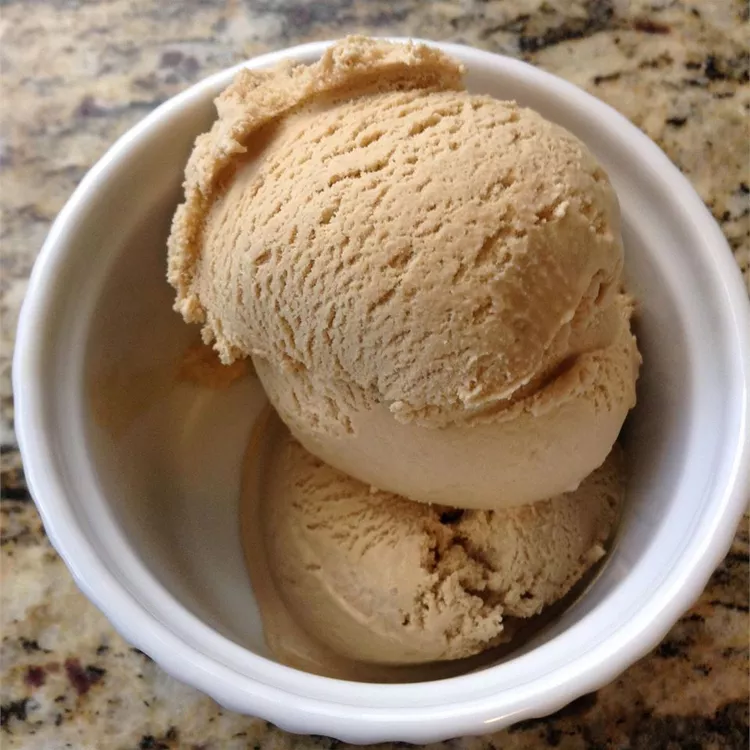

Caramel Macchiato Ice Cream

Description
This caramel macchiato ice cream is frozen bliss. It's a frosty, homemade version of that famous coffee shop's macchiato.
Ingredients
- 1 cup milk
- 1 cup white sugar
- 2 tablespoons instant coffee granules
- 1 pinch salt
- 2 cups heavy cream
- ¾ cup caramel dessert sauce
Steps
- Whisk together milk, sugar, instant coffee granules, and salt in a large bowl until sugar is dissolved. Stir in heavy cream. Cover the bowl and refrigerate until chilled, at least 2 hours.
- Pour chilled mixture into an ice cream maker and freeze according to manufacturer's directions until it reaches soft-serve consistency. Transfer 1/2 of the ice cream to a one- or two-quart lidded plastic container. Pour 1/2 of the caramel sauce over the top, then repeat the layers with remaining ice cream and caramel. Swirl caramel into ice cream using a chopstick or knife.
- Cover ice cream surface with plastic wrap to seal. Allow ice cream to ripen in the freezer for at least 2 hours or overnight for best results.